DNA methylation is both a hallmark and a potential driver of aging. While aging alters methylation patterns over time, certain changes may also regulate biological aging processes like inflammation and cell cycle control. As one of the most consistent epigenetic markers, methylation enables the creation of accurate epigenetic clocks. This project combines biological insight with interpretable machine learning to explore these patterns, with implications for longevity science and personalized health monitoring.
DNA Methylation and Epigenetic Aging
Personal Project
Dataset Understanding
The dataset comprises 656 blood-derived DNA methylation samples, each profiled using the Illumina 450K BeadChip array, resulting in 473,040 CpG features per sample. Each CpG site captures methylation levels at specific genomic locations, enabling detailed epigenetic profiling. The goal is to predict an individual’s chronological age based on these high-dimensional methylation signatures.
Diversity of the Data
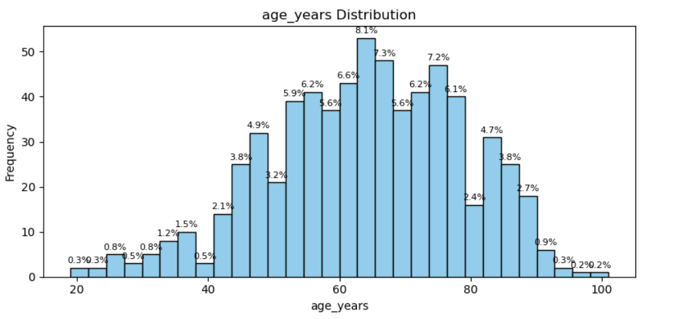
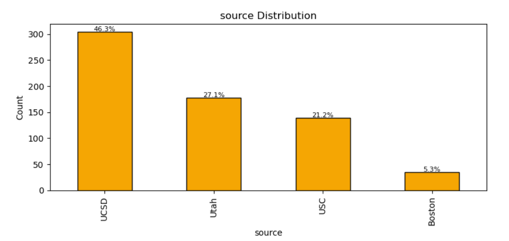
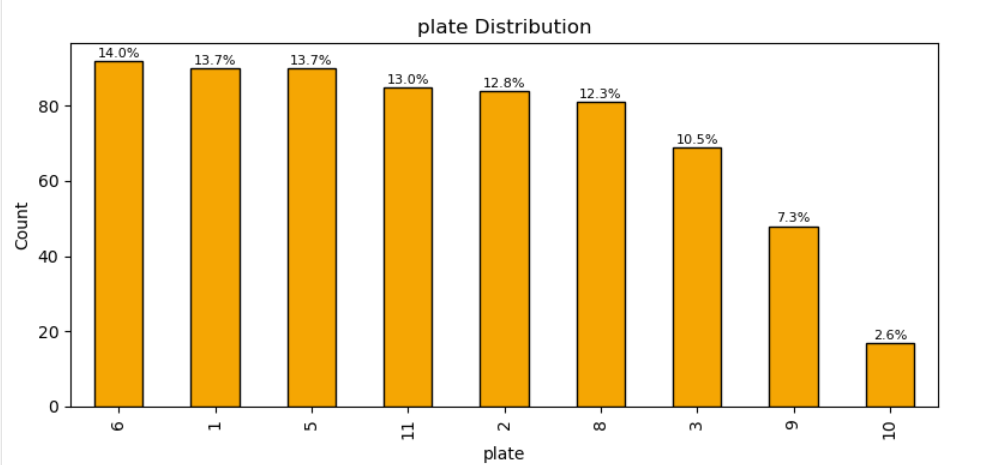
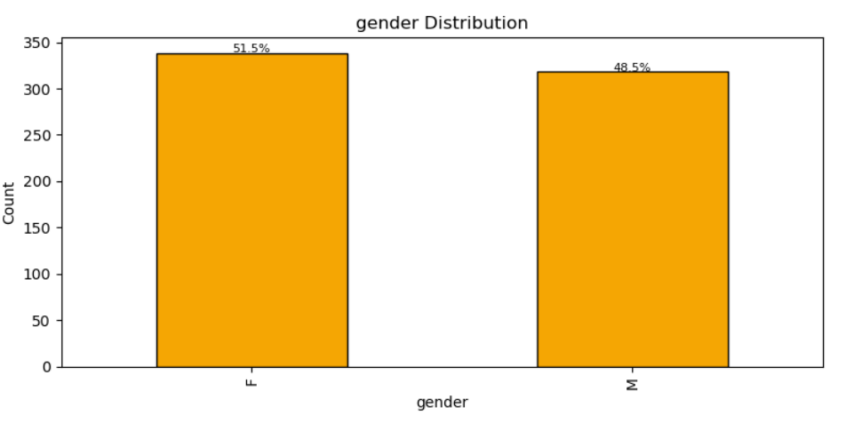
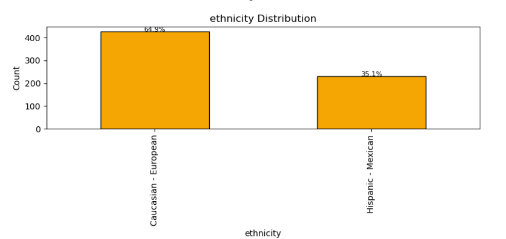
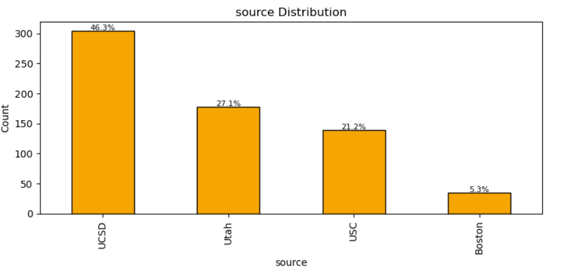
In the exploratory analysis, we observed that participant ages range from 19 to 101 years, with a peak density between 55 and 75 — offering a strong signal for age prediction modeling. The dataset exhibits some source imbalance, with nearly half the samples sourced from UCSD, followed by Utah, USC, and a smaller subset from Boston. Gender distribution is balanced, with 51.5% females and 48.5% males. Ethnically, the dataset is predominantly composed of Caucasian-European individuals (64.9%) and a significant representation of Hispanic-Mexican participants (35.1%). Additionally, samples were processed across 10 different plates with minor unevenness, which may introduce batch effects worth accounting for during model training.
Data Preprocessing
Due to the high dimensionality of the dataset, it is computationally intensive and biologically unnecessary to use all features in machine learning models. We computed the Pearson correlation between each CpG site’s methylation value and the target variable, age_years. We selected features with an absolute correlation coefficient (|r|) ≥ 0.5. This filtering resulted in 405 CpG sites that are strongly associated with chronological aging.
Model Building and Evaluation
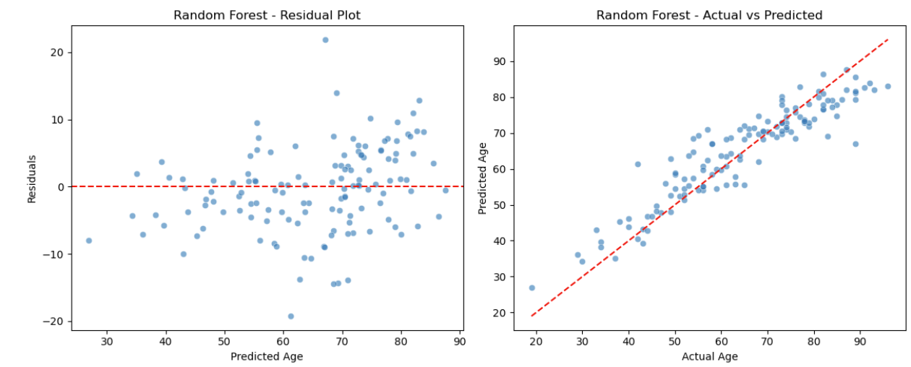
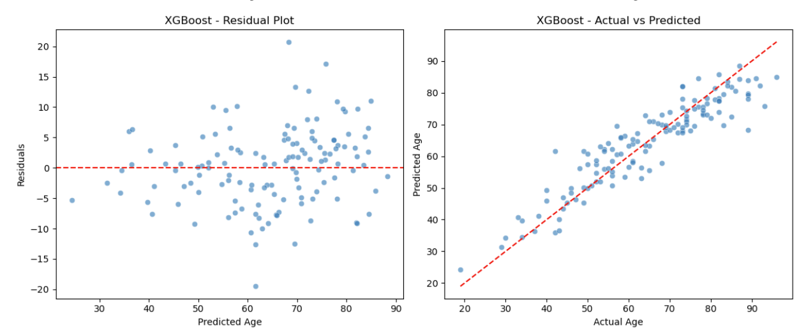
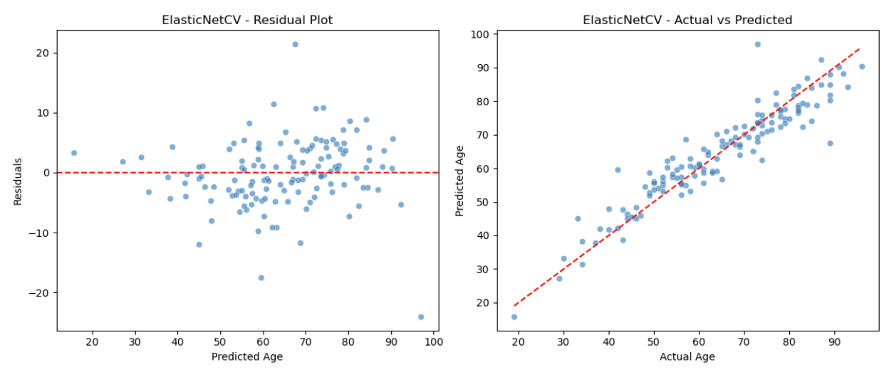
All three models perform reasonably well, but ElasticNetCV provides the most balanced and accurate predictions across the age spectrum, with residuals showing the least spread and a close fit to the ideal prediction line.
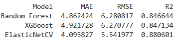
Despite the nonlinear capabilities of tree-based models, ElasticNetCV outperformed both Random Forest and XGBoost — likely due to the strong linear signal in the selected CpG features and the regularization benefits of ElasticNet.
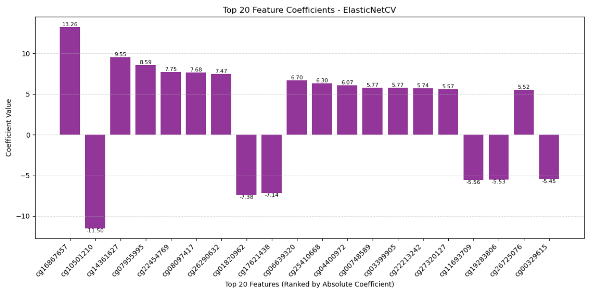
The bar chart visualizes the top 20 CpG sites ranked by the absolute value of their ElasticNet coefficients. A higher absolute coefficient indicates a stronger contribution to the model’s prediction of chronological age.
- Positive coefficients (e.g.,
cg16867657,cg14361627) suggest that higher methylation levels at those sites are associated with higher predicted age. - Negative coefficients (e.g.,
cg10501210,cg1820962) indicate that increased methylation is linked to younger predicted age.
The site cg16867657 emerged as the most influential with a strong positive
coefficient of 13.26, while cg10501210 had the strongest negative
effect at −11.50.
Male vs. Female Comparison
To explore potential sex-specific epigenetic patterns, we separated the dataset by gender and examined whether the same CpG sites contribute to age prediction in males and females. This allows us to investigate whether age-associated methylation markers are consistent across sexes or if distinct features drive aging signals in each group.
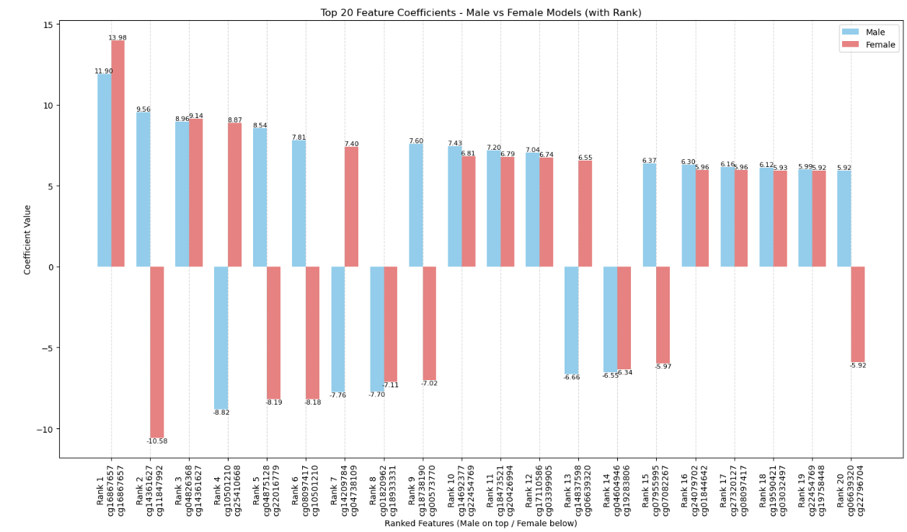
Interpretation and Inference
Retrieved genomic annotations for top CpG sites using the
IlluminaHumanMethylation450kanno.ilmn12.hg19 Bioconductor package in R, mapping
each site to its chromosome, position, associated gene, and regulatory region.
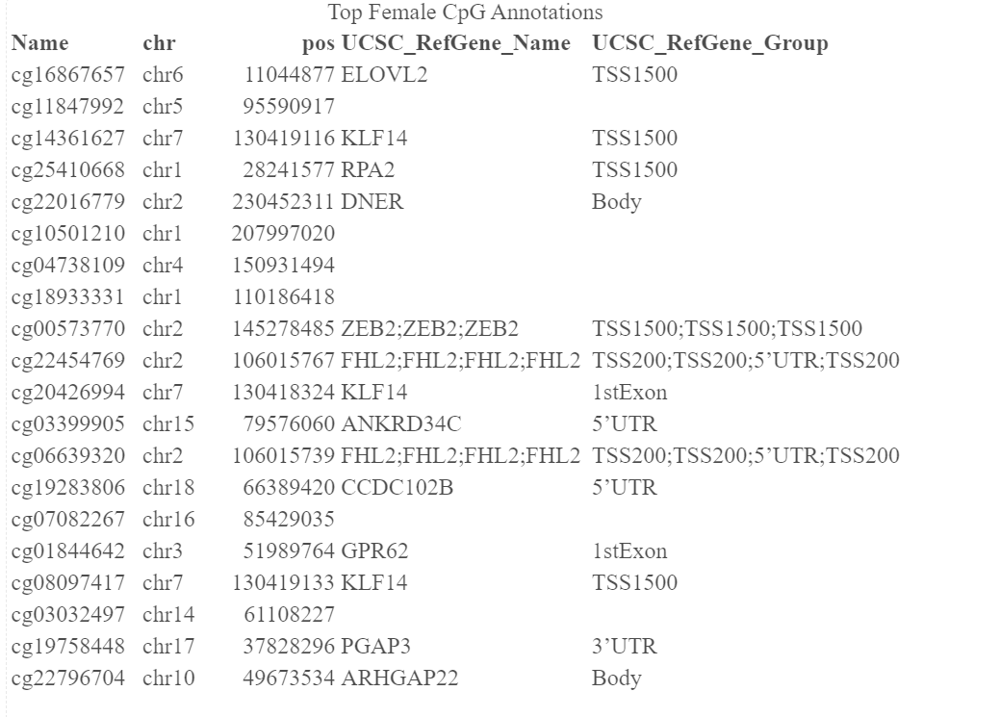
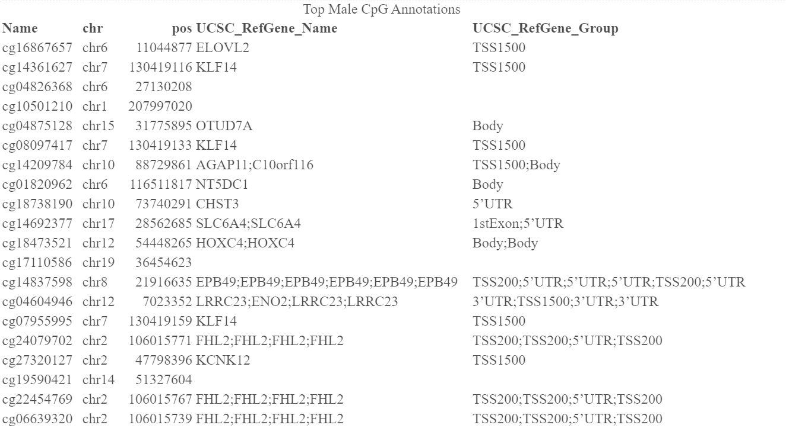
The CpG sites cg16867657 (chr6), cg14361624 (chr7), and
cg10501210 (chr1) were among the most contributing features in both male and
female models. The recurrence of these sites across sexes underscores their potential role as
robust, sex-independent epigenetic biomarkers.
Notably, cg16867657, cg04826368, and cg01820962, all
located on chromosome 6, ranked among the top 8 most predictive CpG features in the male
model. This suggests a potential male-specific epigenetic signature on chr6, highlighting its
role in age-associated methylation patterns.
While chromosome 2 appeared in the top features for both male and female models, it was more prominent in females, with four CpG sites ranked among the top contributors. However, given the modest sample size (~650 samples), these observations should be interpreted cautiously. A larger, more diverse dataset may help confirm whether these chromosome-specific patterns are biologically significant or sample-dependent.
One particularly notable site, cg11847992, had a strong negative coefficient and
ranked as the second most predictive feature in the female model. Its exclusive appearance in
the female-specific feature set suggests it may be involved in early-age methylation
regulation uniquely in females, warranting further investigation.